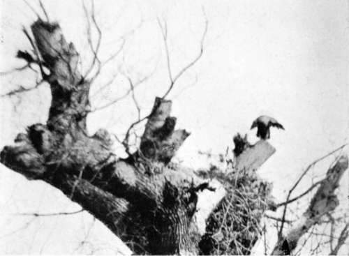
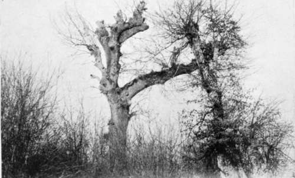

The Balkans Revisited : Albania. Part 5
Description
This section is from the book "Bird-Hunting Through Wild Europe", by R. B. Lodge. Also available from Amazon: Bird-Hunting Through Wild Europe.
The Balkans Revisited : Albania. Part 5
When at last we reached the nest, which was placed on the top of a huge pollarded oak, a fine Sea Eagle flew off. Having set up the camera and made a screen of branches, the men and horses were sent back with instructions to come for me before dusk, leaving me quite alone in the depths of the forest-quite alone, that is, as far as I knew. But after I had been there about two hours, suddenly and noiselessly, without the slightest warning, two wild-looking Albanians, in ragged garments but armed to the teeth with rifles and revolvers, stepped out from behind the nearest tree. I had been intent on watching for the Eagle's return to her eyry, and had neither seen nor heard anything of their approach, so that I was completely taken by surprise.
My rifle was leaning against the tree within reach, and a loaded revolver was in my pocket, but though they looked two of the most unprepossessing ruffians I had seen for some time they made no hostile demonstration, they merely stood and looked at me silently as though they wondered what on earth I was up to. Well they might! I must say I also wondered what they were up to, and I wasn't quite easy in my mind, for I knew that this forest, like all the forests in Northern Albania, was infested with robbers, and I let them see that I was well armed, and accosted them in Italian, which is very generally used here. However, they only answered in Albanian, which of course I was unable to understand. Here was a deadlock. However, I tried to show them by signs what I was about, and handed them a glass of wine from my flask. In return they rolled me a cigarette. After this exchange of civilities there was no fear of anything wrong, and after a short time I tried to get them to move on, as they were wasting my time. But they wouldn't budge, so as it was no good expecting the Eagle to come I determined to photograph my visitors instead, which seemed to amuse them mightily, though I don't suppose they had ever seen a camera before.
Finally they departed, after stopping three-quarters of an hour, and left me free to continue my work.
After some time the Eagle came as I was eating my lunch. Looking up I saw her sitting on a bough just over the nest, and was so taken by surprise that I didn't get the exposure made in time, and she must have seen me, for she never returned. There were two eggs in this nest, rather incubated.
To my great surprise, after returning to the house, while we were having dinner who should come in but my two friends of the morning. After delivering up their weapons, which were hung up on the wall with the rest, they shared our meal-for here anybody passing looks in for a rest and something to eat as a matter of course-and afterwards we all slept round the fire together. I don't know if they were robbers or not, very probably they were, for I knew that my hosts had been in trouble recently for harbouring and assisting robbers. But living as they do on the outskirts of the forests they have to keep in with them for fear of losing their own cattle, or perhaps having a bullet put into them from behind a tree if they refuse hospitality when it is demanded. At the same time, if it comes to the ears of the authorities they are accused of being accomplices and imprisoned until a sufficient backsheesh is paid. Anyhow, the men, whether robbers or not, were very civil, and one of them accompanied me into the forest the following day, and brought back my horse for my return in the evening.
Sea Eagle Returning To Its Nest
Nest Of Sea Eagle (Haliaetus Albicilla)
There was another nest of Sea Eagle not far away from the first, perhaps 300 yards, not more, which also held two eggs, both addled.
The number of addled eggs one finds in the nests of the great Raptores has been, as far as my experience goes, very large. I don't know how to account for it, unless it is that these birds in the absence of enemies powerful enough to prey on them, and being but seldom molested by the inhabitants of these wild countries, live to a great age, in fact outlive their powers of reproduction. In the course of the time covered by this book, for example, I have met with the following addled eggs of raptorial birds : one Bonelli's Eagle's and two Griffon Vultures' in Spain, three Sea Eagles' in Albania, and one Black Vulture's in Roumania.
Between these two nests there was an open space among the trees, in which lay a dead donkey, recently eaten by Vultures. The bones were picked bare, and the earth around trampled with many feet, and covered with splashes of their dung. There was a big, hollow tree close at hand, in which I thought would be room to hide myself and the camera. Accordingly I had another dead donkey brought by bullock-cart from another part of the forest and deposited there, while one of the men enlarged with his axe the interior of the tree.
Here I took up my position early the next morning hoping for a photograph of Vultures, or perhaps one or other of the Eagles from the neighbouring nests. And here I spent four days of torture. The tree was after all far too small, in spite of all the axe work, and though I have spent long hours waiting for birds in many queer positions and uncomfortable attitudes, never in all my life have I spent such weary hours as in this tight-fitting tree. I had to stand with my feet straddled out, and it was impossible to move either of them an inch without upsetting or disturbing the camera. The worst of it was that all my four days' discomfort was utterly wasted, for I never did one single photograph. The first day I could see in front of me, on a dead tree about fifty yards away, three Griffons. For hours they sat there quite motionless, as if dead donkeys were the last things in the world they wanted. Each moment I hoped they would descend, but the hole in front of my tree was too big to fill up closely enough for such keen-eyed birds, and finally they departed silently, no doubt having seen enough to arouse their suspicions. Magpies, Hooded Crows, and Ravens, all came to the donkey ; but during the four days nothing else touched it during the hours of daylight. And at night it was devoured by jackals, who dragged it about and finally finished it.
Continue to:
- prev: The Balkans Revisited : Albania. Part 4
- Table of Contents
- next: The Balkans Revisited : Albania. Part 6